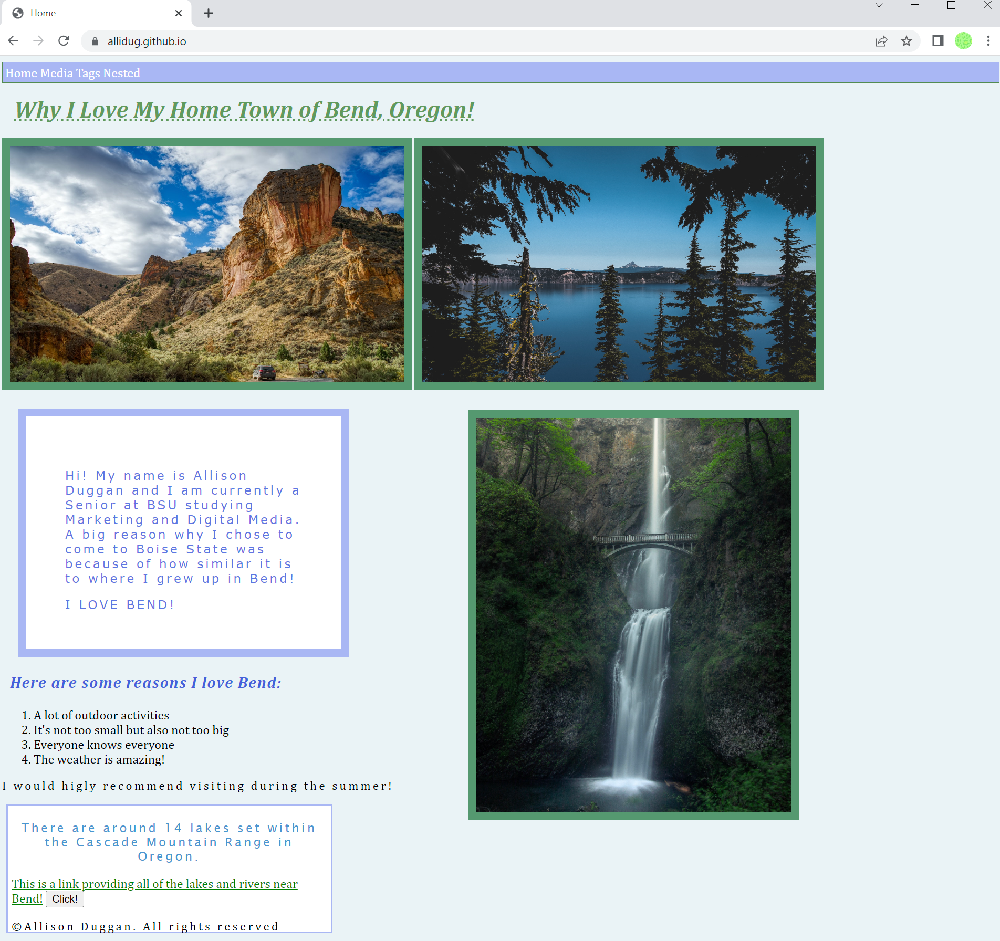
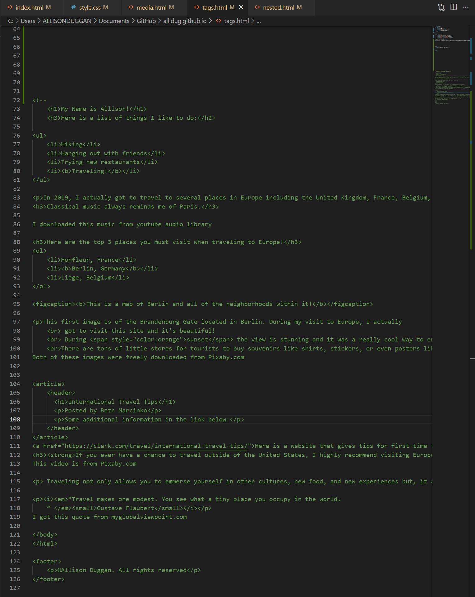

Before starting this class, I had zero experience with coding. Honestly, I was a little nervous because I didn't really know what to expect. As I started to learn the basics and actually begin to build mock websites, I can definitely say I have found a new passion! I never really struggled with anything major other than the normal adjustments to typing in all lower case, remembering to hit the save button often, and learning all of the new code language. I can say that this class has been one of my favorites during my time at Boise State!
Here are 2 examples of a mock website I created about my hometown and the coding behind another assignment. I really wanted to experiment with CSS so I made my website very colorful and have lots of borders.


Tips & Tricks
Use all resources around you. The Website W3schools is a great tool for if you get stuck. They show step-by-step processes and examples of coding with pictures!
Be creative with your work! It's easy to get caught up on the logistics but, don't forget to personalize your coding to your own style!
Focus on the fundamentals. Once you learn the basics of coding, it becomes a lot easier to add new coding tricks into your portfolio and expand your knowledge.